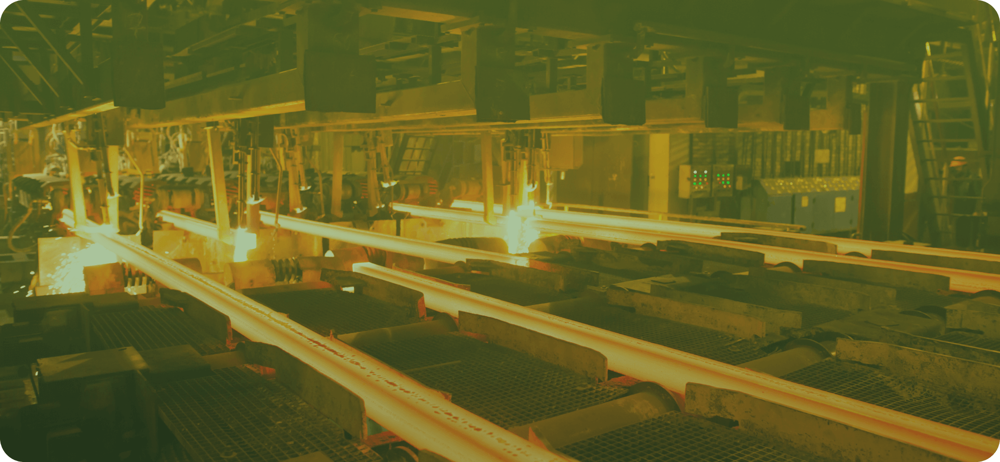
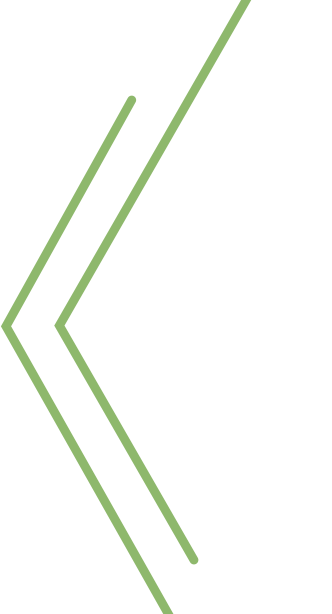

09
دراسة صناعية: صناعة الحديد و الصلب
الفرص و التحديات
الفرص
- فيمــــا يلي نشــــير إلى أبرز الفــــرص التي يمكن اســــتغلالها في قطاع صناعة الحديد:
- مشــــاريع البنيــــة التحتية الجديــــدة التي ينفذهــــا صندوق الاستثمارات العامة. و المشاريع الضخمة واسعة النطاق في البنية التحتية و الاقتصادية و الصناعية و المدن لتجديد المرافــــق و الخدمــــات المقدمــــة في البــــلاد لتعزيز فرص الأعمال.
- إطلاق الحكومــــة للعديد من المبادرات: و التي تتمثل في زيادة معدل تملــــك المنازل و برامــــج المحتوى المحلي و المنتجــــات المصنعــــة محليــــًا فــــي المملكــــة العربيــــة السعودية، مما يزيد الطلب على المنتج المحلي.
- إتاحــــة فرص التصدير إلــــى البلدان المجاورة، مســــتفيدة من المبادرات التي تهدف لتطوير البنية التحتية.

التحديات
- هنــــاك تحديات متعددة في قطاع صناعة الحديد و التي تضع الأطراف ذوي العالقة (المنتجين و المستخدمين النهائيين) في مواجهة بعض الصعوبات من حيث المنافسة و الربحية. و يمكن تلخيص أبرز هذه التحديات في النقاط التالية:
- تقلــــب أســــعار المــــواد الخــــام، حيث تتســــم أســــعار بيع كتــــل الصلــــب بالتقلــــب الشــــديد و تعتمد علــــى العديد مــــن العوامــــل مثــــل الســــعر العالمــــي و مســــتوى الطلــــب المحلــــي و العالمــــي و توافــــر خــــردة الحديــــد (Steel Crap).
- قلة المواد الخام الرئيســــية (خردة الحديــــد:) حيث يوجد نقص في خردة الحديد في المملكة العربية الســــعودية و حتى على المستوى العالمي.